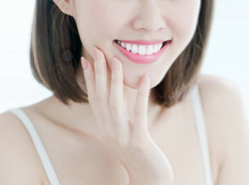
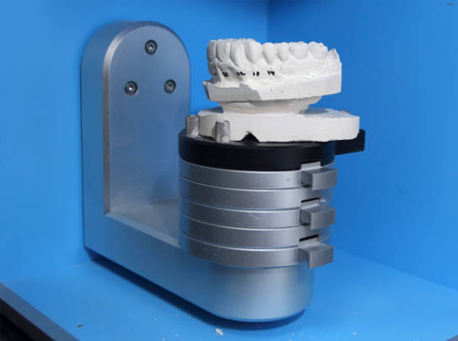
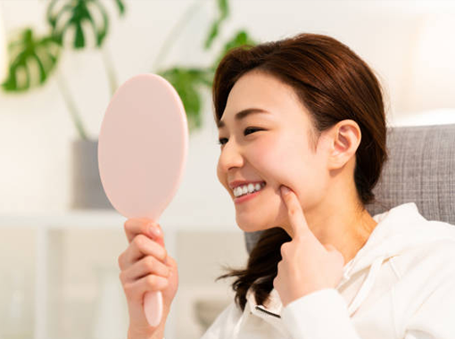
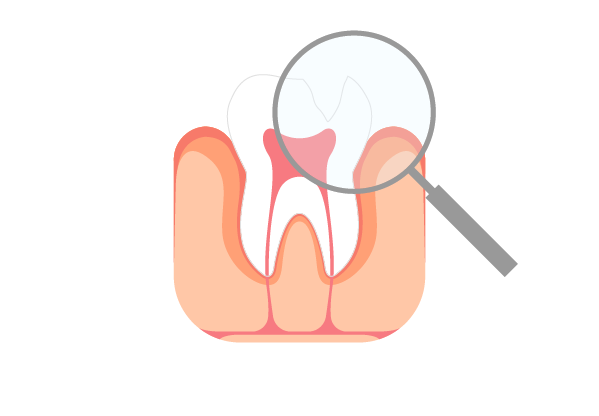
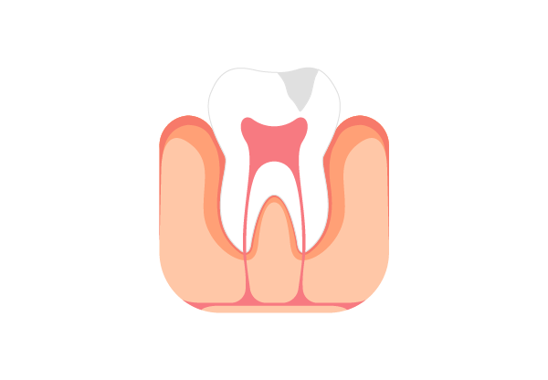
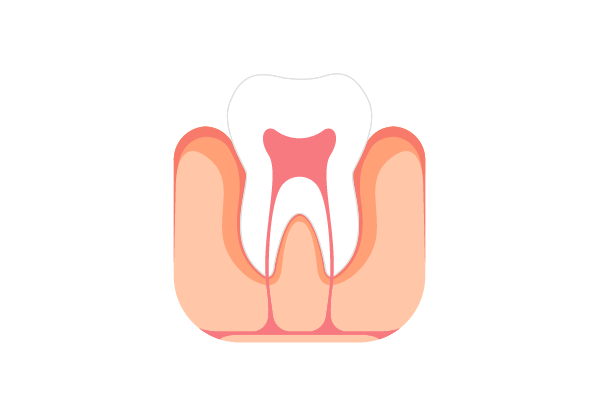

분석과 제안
앞니의 손상(깨짐, 벌어짐)
부위를 정확하게 진단합니다
치아 손상을 줄이며 자연스러운 색감으로 심미성을 살립니다
ZERO DENTAL CLINIC
내 자연치아를 지키며 앞니를 자연스럽게 바꿉니다
심미적으로 가장 먼저 보이는 앞니의 형태나 모양이 바르지 않거나
변색으로 신경이 쓰이는 경우, 그리고 벌어짐에 따른 외관상의 문제와
우식증(충치 유발 등)에 대한 예방까지,
이러한 문제점들을 개선하기 위해 치아 삭제 없이 적용하는 섬세한 치료 방법입니다.

3D 구강 스캐너의 빠른 스캔 속도를 통해 환자의 치아 본을 편안하게 떠 작업합니다. 입에 무는 인상재 없이 정밀하고 빠르게 진행됩니다.

제로치과병원은 자연치아 보존을 위한 치료를 최우선으로 진행합니다. 최소한의 치아 삭제 이후에 레진 치료를 시행합니다.

단단한 복합레진으로 떨어지는 걱정은 덜고, 자연치아와 색상이 비슷한 재료를 사용하여 심미성이 뛰어납니다.


앞니의 손상(깨짐, 벌어짐)
부위를 정확하게 진단합니다

레진을 적용해
손상된 부분을 메꿔줍니다

충전재를 섬세하게
다듬고 마무리합니다
치아를 삭제하지 않고 직접 수복법이 가능하여 치료기간이 짧고
치료비용이 경제적일 뿐만 아니라 재치료가 용이하다는 장점이 있습니다.
치아를 삭제하지
않아 내 치아를
그대로 보존
직접 수복법으로
치료기간이
짧음
비교적 경제적인
치료비용으로
부담이 적음
필요 시 추후
재치료가
용이함
대문니 벌어짐 등
심미적인 개선을
가볍게 원하는 경우
치아가 짧거나 뾰족해
심미적·기능적
치료를 원하는 경우
결손 부위에 음식물이
끼여 충치 유발을
예방하고 싶은 경우
치아를 삭제하는
라미네이트 대신
다른 치료를 원하는 경우